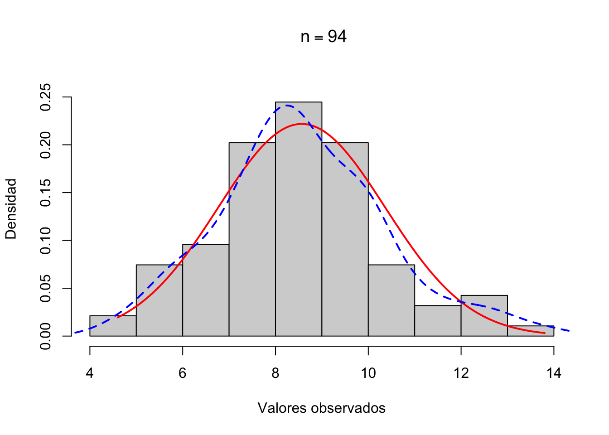

El paquete BioStatR (versión 1.0.0, 2026) ha sido desarrollado en la Unidad Docente de Bioestadística del Departamento de Estadística e Investigación Operativa de la Universidad de Granada por Pedro Femia Marzo y Miguel Ángel Luque Fernández. Proporciona un conjunto de funciones de alto nivel que integran descripción, inferencia, modelización (lineal y logística) y visualización en una sola llamada, diseñadas específicamente para la docencia de bioestadística en ciencias de la salud.
# 1. Instalar el paquete remotes si no lo tienesinstall.packages("remotes")# 2. Instalar BioStatR directamente desde GitHub (compila para tu sistema)remotes::install_github("migariane/BioStatR")# 3. Cargar el paquete y el conjunto de datos osteolibrary(BioStatR)data(osteo)
Para obtener la referencia bibliográfica del paquete:
Mostrar el código
citation("BioStatR")
El paquete incluye el dataset osteo, con datos reales de 94 pacientes diabéticos evaluados en la Unidad de Diabetes de la Facultad de Medicina de la Universidad de Granada. Es el conjunto de referencia de todos los ejemplos de este apéndice y del libro.
Genera una tabla de frecuencias absolutas, relativas y acumuladas. Si cuts > 0, agrupa en intervalos de igual amplitud. El argumento grf = FALSE suprime el gráfico.
TipEjemplo B.1: Distribución de la edad
Cuadro B.4: freq() sobre la edad del dataset osteo
Proporciona media, desviación típica y tamaño de cada grupo. Con ic = TRUE añade intervalos de confianza por grupo.
TipEjemplo B.2: IMC por sexo
Cuadro B.7: IMC según sexo en el dataset osteo
Mostrar el código
grps(osteo$imc, osteo$sexo, grf =FALSE)
# Descriptiva de osteo$imc por osteo$sexo
# ---------------------------------------
osteo$sexo
n media dt
Hombre 45 23.514 2.890
Mujer 49 24.294 4.389
Total 94 23.921 3.748
Cuadro B.8: IMC según sexo con intervalos de confianza
Mostrar el código
grps(osteo$imc, osteo$sexo, ic =TRUE, grf =FALSE)
# Descriptiva de osteo$imc por osteo$sexo
# ---------------------------------------
osteo$sexo
n media dt ic_inf ic_sup
Hombre 45 23.514 2.890 22.646 24.382
Mujer 49 24.294 4.389 23.033 25.555
Total 94 23.921 3.748 23.153 24.689
___________
* ICs para las medias μ[i] y μ global al 95% de confianza
(sin corrección por inferencia múltiple)
B.3 B.3 Intervalos de confianza: icm(), icp(), icl()
B.3.1 B.3.1 IC para la media: icm()
Cuadro B.9: Signatura de icm()
Mostrar el código
icm(x =0, n =0, m =0, s =0, conf =0.95, alfa =0.05, decs =3)
Intervalo de confianza bilateral para la media de una distribución normal. Acepta los estadísticos suficientes (\(n\), \(\bar{x}\), \(s\)) o directamente los datos (x).
TipEjemplo B.3: IC para la media de HbA1c
Cuadro B.10: IC 95% para la media poblacional de HbA1c
Mostrar el código
icm(m =mean(osteo$hba1c), s =sd(osteo$hba1c), n =nrow(osteo))
Intervalo de confianza bilateral para la media de una VA normal
----------------------------------------------------------------
Información muestral:
Tamaño muestral: n = 94
Media: m = 8.565
Desviación típica: s = 1.799
Error estándar de la media: sem = 0.186
Estimación:
95%-IC(µ): (8.196, 8.933)
Precisión obtenida: 0.368
Interpretación: Con 95 % de confianza, la media poblacional de HbA1c en diabéticos de la UGR está aproximadamente entre 8.2 % y 8.9 %, lo que indica un control glucémico deficiente (meta clínica: HbA1c < 7 %).
B.3.2 B.3.2 IC para proporción: icp()
Cuadro B.11: Signatura de icp()
Mostrar el código
icp(x =0, n =0, conf =0.95, alfa =0.05, decs =4)
Calcula el IC para una proporción con varios métodos: Clopper–Pearson (exacto), Wilson, Wald clásico y Agresti–Coull.
TipEjemplo B.4: IC para la prevalencia de tabaquismo
Cuadro B.12: IC 95% para la prevalencia de tabaquismo
Mostrar el código
icp(x =sum(osteo$tabaco =="Sí"), n =nrow(osteo))
Intervalo de confianza para una proporción binomial
---------------------------------------------------
Información muestral:
Tamaño de muestra: n = 94
Estimación puntual clásica: p=x/n = 0.4362, q=(1-p)=0.5638
Casos observados: x = 41
# Método exacto (Clooper-Pearson):
Pseudo-estimación puntual: p' = 0.4405, q'=(1-p')=0.5595
95%-IC(π): (0.3385, 0.5424)
Semiamplitud: 0.1019
# Método de Wilson (con cpc):
Pseudo-estimación puntual: p' = 0.4388, q'=(1-p')=0.5612
95%-IC(π): (0.3354, 0.5422)
Semiamplitud: 0.1034
# Método de Wald (con cpc):
Estimación puntual (clásica): p=x/n = 0.4362, q=(1-p)=0.5638
95%-IC(π): (0.3306, 0.5417)
Precisión: 0.1056
# Método de Wald ajustado (Agresti-Coull):
Estimación puntual: p=(x+2)/(n+4) = 0.4388, q=(1-p)=0.5612
95%-IC(π): (0.3405, 0.537)
Precisión: 0.0982
B.3.3 B.3.3 IC para tasa Poisson: icl()
Cuadro B.13: Signatura de icl()
Mostrar el código
icl(x =0, n =0, conf =0.95, decs =4)
IC para la tasa \(\lambda\) de una distribución de Poisson basado en el método exacto (gamma–Poisson). Útil en vigilancia epidemiológica para tasas de incidencia por persona-año.
TipEjemplo B.5: Tasa de incidencia de complicaciones diabéticas
En un registro hospitalario se observan 12 nuevos casos de retinopatía diabética en 1000 personas-año de seguimiento. Estimamos la tasa \(\lambda\) con un IC al 95 %:
Cuadro B.14: icl() — IC exacto para una tasa de incidencia
Mostrar el código
icl(x =12, n =1000)
Intervalo de confianza bilateral para el parámetro λ de una VA con distribución de Poisson
----------------------------------------------------------------------------------------------
Información muestral:
Se indica una única observación muestral 1000
Tamaño muestral: n = 1000
Media observada: m = 12
Estimación:
[1] Método exacto:
95 %-IC(λ): ( 11.7862 , 12.2167 )
Semiamplitud del intervalo: 0.2152
[2] Aproximación a la normal (transformación de la raiz):
Validez de la aproximación: Σx = 12000 ⩾ 15 (válida)
95 %-IC(λ): ( 11.7863 , 12.2167 )
Precisión obtenida: 0.2152
Interpretación: la tasa estimada es de 12 casos por cada 1000 personas-año (IC 95 %: aproximadamente 6.2 – 21.0 por 1000 p-año). El método exacto (gamma–Poisson) es preferible al de la aproximación normal cuando el número de eventos es pequeño.
B.4 B.4 Tamaño muestral: nm(), np() y nl()
B.4.1 B.4.1 Para la media: nm()
Cuadro B.15: Signatura de nm()
Mostrar el código
nm(d, n, m, s, alfa =0.05)
Calcula el tamaño muestral necesario para estimar una media con precisión \(d\) (semiamplitud del IC) dada una desviación típica esperada \(s\).
TipEjemplo B.6: ¿Cuántos pacientes para estimar HbA1c con mayor precisión?
Cuadro B.16: Tamaño muestral para estimar HbA1c con d = 0.3
Mostrar el código
nm(d =0.3, n =94, m =mean(osteo$hba1c), s =sd(osteo$hba1c), alfa =0.05)
# Tamaño de muestra para la estimación de la media de una VA normal o su aproximación
# -----------------------------------------------------------------------------------
# Muestra piloto:
Tamaño muestral: n = 94
Media: m = 8.5649
Desviación típica: s = 1.7987
Error estandar de la media: sem = 0.1855
Precisión observada: d = 0.3684
# Estimación del tamaño muestral:
Precisión deseada: δ = 0.3000
Tamaño muestral necesario: n ≥ 142
B.4.2 B.4.2 Para proporciones: np()
Cuadro B.17: Signatura de np()
Mostrar el código
np(x, n, d, conf =0.95, decs =5)
Tamaño muestral para estimar una proporción con precisión \(d\), usando la estimación piloto \(\hat{p} = x/n\).
B.4.3 B.4.3 Para tasa Poisson: nl()
Cuadro B.18: Signatura de nl()
Mostrar el código
nl(x, n =0, d, lmax =0, conf =0.95, alfa =0.05)
Tamaño muestral para estimar el parámetro \(\lambda\) de una distribución de Poisson con la precisión deseada. Se puede informar a partir de observaciones piloto o del valor máximo esperado del parámetro (lmax).
TipEjemplo B.7: Diseño de un estudio de vigilancia epidemiológica
Se planea un estudio para estimar la tasa de incidencia de una infección hospitalaria con una precisión de \(\pm 1\) caso por persona-año. Un estudio piloto previo observó 3 casos en una sola unidad de seguimiento (\(n = 1\), media observada \(\bar x = 3\)).
Cuadro B.19: nl() — tamaño muestral a partir de observación piloto
Mostrar el código
nl(x =3, d =1)
Tamaño de muestra necesario para estimar el parámetro λ
de una VA con distribución de Poisson con precisión δ
----------------------------------------------------------------------
Muestra piloto:
Muestra de una sola observación
Tamaño muestral: n = 1
Media observada: m = 3
Estimación considerando la información muestral:
95 %-max(λ) = 7.754 (método exacto)
Precisión deseada: δ = 1
Tamano muestral sin cpc: n ⩾ 30
Tamano muestral con cpc: n ⩾ 31
Interpretación: se requieren al menos \(n \approx 31\) unidades de seguimiento (con corrección por continuidad) para conseguir la precisión deseada al 95 % de confianza.
Si en lugar de datos piloto se dispone de una cota superior esperada del parámetro (p. ej. \(\lambda \leq 4.5\)), se utiliza el argumento lmax:
Cuadro B.20: nl() — tamaño muestral a partir de un valor máximo esperado
Mostrar el código
nl(lmax =4.5, d =1)
Tamaño de muestra necesario para estimar el parámetro λ
de una VA con distribución de Poisson con precisión δ
----------------------------------------------------------------------
Estimación con el valor máximo propuesto para el parámetro:
Valor máximo propuesto: λ = 4.5
Precisión deseada: δ = 1
Tamano muestral sin cpc: n ⩾ 18
Tamano muestral con cpc: n ⩾ 19
B.5 B.5 Contrastes de hipótesis
B.5.1 B.5.1 Test de normalidad: testnormal()
Cuadro B.21: Signatura de testnormal()
Mostrar el código
testnormal(x, obs =TRUE, mod =TRUE, dens =TRUE, sw =TRUE, decs =3, grf =TRUE)
Contraste de Shapiro–Wilk con visualización integrada (histograma + densidad teórica + Q–Q plot).
TipEjemplo B.8: ¿Es normal la HbA1c?
Cuadro B.22: Test de normalidad para HbA1c
Mostrar el código
testnormal(osteo$hba1c, grf =FALSE)

# Test de normalidad de Shapiro-Wilk
-------------------------------------
n = 94, W = 0.983, p = 0.276
En esta muestra la HbA1c es compatible con una distribución aproximadamente normal — contrasta con la edad, que es claramente asimétrica.
B.5.2 B.5.2 Test t: testt()
Cuadro B.23: Signatura de testt()
Mostrar el código
testt(m, s, n, m0, delta, potencia)
Integra en una sola función: verificación de normalidad (Shapiro–Wilk), t-test de una o dos muestras (pareadas o independientes), test de homogeneidad de varianzas (Welch automático) e IC.
TipEjemplo B.9a: Contraste de una muestra — ¿HbA1c > 7.5 %?
Cuadro B.24: testt() de una muestra: HbA1c contra el umbral clínico
Mostrar el código
# H0: mu = 7.5 vs H1: mu > 7.5testt(m = osteo$hba1c, m0 =7.5, grf =FALSE)
# t-Test con una muestra
# ----------------------
# Resumen de 'osteo$hba1c'
n = 94.000
media = 8.565
d.t. = 1.799
sem = 0.186
# Estimación de la media μ:
95%-IC(μ) = (8.196, 8.933)
# Test de normalidad de Shapiro-Wilk:
W = 0.983, gl = 94, p = 0.276
# Test de Student para contrastar H₀:μ=μ₀ con μ₀=7.500
texp = 5.740, gl = 93
p < 0.001 para la alternativa bilateral H₁:μ≠μ₀
p < 0.001 para la alternativa unilateral H₁:μ>μ₀
Estimación del efecto bruto
95%-IC(μ-μ₀) = (0.696, 1.433)
Rechazamos \(H_0\): la media de HbA1c supera significativamente el umbral clínico de 7.5 %.
TipEjemplo B.9b: Contraste de dos muestras — HbA1c entre hombres y mujeres
Cuadro B.25: testt() de dos muestras independientes
Mostrar el código
testt(grupos = osteo$sexo, m = osteo$hba1c, grf =FALSE)
# t-test para 2 Muestras Independientes
# -------------------------------------
# Información muestral y estimación de las medias
Niveles de agrupación: Hombre, Mujer
n media dt sem IC
osteo$hba1c [Hombre] 45 8.553 1.745 0.260 (8.029, 9.078)
osteo$hba1c [Mujer] 49 8.576 1.864 0.266 (8.04, 9.111)
____
* IC elaborados al 95% de confianza para estimar μ₁ y μ₂ respectivamente
# Pruebas de normalidad (test de Shapiro-Wilk)
[1] Para grupo = Hombre, W = 0.958, gl = 45, p = 0.102
[2] Para grupo = Mujer, W = 0.980, gl = 49, p = 0.566
# Test de homogeneidad de varianzas. Fexp = (var₂/var₁)
Fexp = 1.141, gl₁ = 48, gl₂ = 44, p = 0.660
# Diferencia de medias (osteo$hba1c [Mujer] - osteo$hba1c [Hombre])
Hipótesis a contrastar: H₀:μ₁=μ₂ (μ₂-μ₁=0)
a) Test de Student (varianzas homogéneas)
texp = 0.059, gl = 92
p = 0.953 para la alternativa bilateral H₁:μ₁≠μ₂
p = 0.476 para la alternativa unilateral H₁:μ₁<μ₂
95%-IC(μ₂-μ₁) = (-0.719, 0.764)
b) Test de Welch (varianzas no homogéneas)
texp = 0.060, gl = 91.96
p = 0.953 para la alternativa bilateral H₁:μ₁≠μ₂
p = 0.476 para la alternativa unilateral H₁:μ₁<μ₂
95%-IC(μ₂-μ₁) = (-0.717, 0.762)
Contraste para una proporción (contra un valor hipotético \(\pi_0\)) o para comparar dos proporciones independientes o pareadas.
TipEjemplo B.11: ¿La prevalencia de tabaquismo supera el 35 %?
Cuadro B.29: testp() de una proporción
Mostrar el código
testp(x =sum(osteo$tabaco =="Sí"), n =nrow(osteo), p0 =0.35)
# Test para contrastar una proporción binomial
# --------------------------------------------
# Información muestral
n = 94
x = 41 n-x=53
p = 0.436; q = (1-p) = 0.564
# Test Ho:π=0.350
[1] Método exacto
H1 Fexp Valor.p
Cola derecha π>0.350 1.410 0.052
Bilateral π≠0.350 - 0.103
95%-IC(π) = (0.339, 0.542) (método de Clooper-Pearson)
[2] Método aproximado a la distribución normal
Validez: min(nπ₀, n(1-π₀)) = 32.9 (>5, el método es válido)
zexp = 1.643, p = 0.100
95%-IC(π) = (0.335, 0.542) (método de Wilson)
B.5.5 B.5.5 Test de Wilcoxon: testwx()
Cuadro B.30: Signatura de testwx()
Mostrar el código
testwx(m1, m2, par =FALSE)
Test de Wilcoxon–Mann–Whitney para dos muestras independientes (par = FALSE) o test de los rangos con signo de Wilcoxon para datos pareados (par = TRUE). Devuelve el tamaño del efecto \(r\) y la probabilidad de superioridad.
TipEjemplo B.12: IMC en diabéticos jóvenes vs. mayores
Cuadro B.31: Wilcoxon–Mann–Whitney sobre IMC por grupo de edad
Test de Wilcoxon/Mann-Whithney para dos muestras independientes
----------------------------------------------------------------
# Información muestral ---
Muestra n min Q1 Q2 Q3 max
1 osteo$imc[osteo$grupo_edad == "< 25"] 32 19.628 21.421 22.845 24.149 32.475
2 osteo$imc[osteo$grupo_edad == "> 33"] 30 18.070 23.382 25.889 28.945 37.333
RIQ
1 2.728
2 5.563
# Rangos ---
Muestra n Suma_rangos Rango_medio U
1 osteo$imc[osteo$grupo_edad == "< 25"] 32 807 25.219 681.000
2 osteo$imc[osteo$grupo_edad == "> 33"] 30 1146 38.200 279.000
# Test ---
U = 279.000; Z = 2.831; W = 279.000; p = 0.005
# Tamaño del efecto ---
Diferencia de localización: -2.667 95%-IC = (-4.518, -0.778)
r = 0.360 (criterio: 0.1 pequeño; 0.3 mediano; >0.5 grande)
Probabilidad de superioridad PS = 0.709
(probabilidad de que un valor al azar de M1 sea < a un valor al azar de M2)
Para comparar dos proporciones en muestras apareadas (antes/después, o dos pruebas diagnósticas en los mismos sujetos). El contraste se basa en las celdas discordantes \(n_{12}\) y \(n_{21}\).
TipEjemplo B.13: Cambio en actividad física tras una intervención
Cuadro B.33: testmcnemar() sobre datos apareados antes/después
# Inferencia con dos proporciones (muestras apareadas)
# ----------------------------------------------------
# Frecuencias observadas pretest x posttest
Antes Después Total
Activo 35 10 45
Inactivo 5 44 49
Total 40 54 94
# Proporciones observadas pretest x posttest
Antes Después Total
Activo 0.3723 0.1064 0.4787
Inactivo 0.0532 0.4681 0.5213
Total 0.4255 0.5745 1.0000
# Test de McNemar: H₀:π₁₂=π₂₁
Validez: n₁₂+n₂₁ = 15 > 10 el test es válido
Zexp = 1.1619
valor.p Alternativa
Bilateral 0.2453 H₁:π₁₂≠π₂₁
Unilateral 0.1226 H₁:π₁₂>π₂₁
# Test exacto de Fisher:
H₀:π₁₂=0.5 para n₁₂ ~ B(n₁₂+n₂₁, π₁₂)
Valor.p Alternativa
Bilateral 0.3018 H₁:π₁₂≠0.5
Unilateral 0.1509 H₁:π₁₂>0.5
____
* Aquí se alude a la probabilidad total de la discordancia, es decir que π₁₂+π₂₁=1
# Estimación de las proporciones individuales de discordancias π₁₂ y π₂₁ (método de Wald ajustado)
[1] p₁₂ = 0.1224, 95%-IC(π₁₂) = (0.0575, 0.1873)
[2] p₂₁ = 0.0714, 95%-IC(π₂₁) = (0.0204, 0.1224)
# Intervalo de confianza para la diferencia de 2 proporciones apareadas
[1] Método de Wald (clásico con cpc):
Estimación puntual de π₁₂-π₂₁ = 0.0532
Validez: n₁₂+n₂₁ = 15 > 5, el IC es válido
95%-IC(π₁₂-π₂₁) = (-0.0282, 0.1346)
[2] Método de Agresti-Min:
Estimación puntual de π₁₂-π₂₁ = 0.0521
Validez: siempre es válido
95%-IC(π₁₂-π₂₁) = (-0.0289, 0.1331)
B.6 B.6 Regresión lineal: rls() y rlm()
B.6.1 B.6.1 Regresión lineal simple: rls()
Cuadro B.34: Signatura de rls()
Mostrar el código
rls(f, data, pred =NULL, grf =TRUE, alfa =0.05, decs =3)
Ajusta el modelo \(Y = \beta_0 + \beta_1 X + \varepsilon\) e informa de: correlación de Pearson con IC, coeficientes con IC, \(R^2\), diagnóstico de residuos y (opcionalmente) predicciones puntuales con IC.
TipEjemplo B.14: ¿La evolución de la diabetes predice la HbA1c?
Cuadro B.35: rls() — regresión lineal simple de HbA1c sobre tevol
Mostrar el código
rls(hba1c ~ tevol, data = osteo, grf =FALSE)
Regresión lineal simple
----------------------------------------------------------------
# Información muestral ---
variable n media dt Min Max Rango
1 hba1c 94 8.565 1.799 4.6 13.8 9.2
2 tevol 94 12.330 8.534 0.0 35.0 35.0
Cov(hba1c,tevol) = -3.64
# Correlación de Pearson ---
r IC_inf IC_sup gl texp sig
-0.237 -0.42 -0.036 92 -2.341 = 0.021
# Modelo lineal ---
Modelo: hba1c ~ tevol
R² = 0.056
S²residual = 3.087
:
Coef estim se ic_inf ic_sup texp sig
1 (Constante) 9.181 0.320 8.546 9.816 28.730 <0.001
2 tevol -0.050 0.021 -0.092 -0.008 2.341 0.021
# Distribución residual ---
Error estándar residual: 1.757
res zres
min -4.481 -2.585
Q1 -0.981 -0.562
Q2 -0.056 -0.032
Q3 0.956 0.551
max 4.669 2.698
Test de normalidad residual (Shapiro-Wilk):
w =0.989, p= 0.625
Extiende rls() al caso multivariante: \(Y = \beta_0 + \beta_1 X_1 + \dots + \beta_p X_p + \varepsilon\). Devuelve la tabla de coeficientes con IC, \(R^2\) y \(R^2\) ajustado, distribución de los residuos con su test de normalidad y, si grf = TRUE, los cuatro gráficos clásicos de diagnóstico más histograma de residuos estandarizados.
TipEjemplo B.15: HbA1c ~ tevol + edad + IMC
Cuadro B.37: rlm() — regresión lineal múltiple sobre el dataset osteo
Tras ajustar simultáneamente por edad e IMC, el efecto del tiempo de evolución sobre la HbA1c se atenúa, sugiriendo confusión parcial. El \(R^2\) ajustado es modesto: estas tres variables explican una fracción pequeña de la variabilidad del control glucémico (ver discusión completa en Capítulo 10).
NotaPredicciones con el modelo
rlm() acepta un data.frame en el argumento pred para devolver predicciones puntuales con intervalos de confianza (de la media) y de predicción (de una nueva observación):
Cuadro B.38: rlm() con predicciones para pacientes hipotéticos
Regresión lineal múltiple
----------------------------------------------------------------
# Información muestral ---
Variable n Media DT Min Max
hba1c hba1c 94 8.565 1.799 4.60 13.800
tevol tevol 94 12.330 8.534 0.00 35.000
edad edad 94 30.191 9.366 18.00 56.000
imc imc 94 23.921 3.748 18.07 37.333
# Modelo lineal ---
Modelo : hba1c ~ tevol + edad + imc
R² = 0.063 (R² ajustado = 0.031 )
S²residual = 3.134
Coeficientes del modelo :
Termino Estimacion Error_Std IC_inf IC_sup t_exp sig
1 (Intercept) 8.601 1.200 6.217 10.984 7.169 < 0.001
2 tevol -0.046 0.025 -0.095 0.003 -1.883 = 0.063
3 edad -0.012 0.024 -0.059 0.035 -0.521 = 0.604
4 imc 0.038 0.052 -0.066 0.142 0.722 = 0.472
# Pronósticos con el modelo ---
Pronosticos puntuales y bandas al 95 % de confianza para
promedios IC(m), y para una nueva observación: IC(obs)
tevol edad imc Puntual IC_m_inf IC_m_sup IC_obs_inf IC_obs_sup
1 5 30 25 8.947237 8.428009 9.466464 5.392127 12.50235
2 15 45 28 8.413571 7.678597 9.148545 4.820606 12.00654
# Distribución residual ---
Error estándar residual: 1.77
Residuos Res_Est
min -4.519 -2.589
Q1 -0.945 -0.545
Q2 -0.010 -0.006
Q3 0.995 0.572
max 4.938 2.923
Test de normalidad residual (Shapiro-Wilk):
w = 0.991 , = 0.744
B.7 B.7 Regresión logística: rlogits() y rlogitm()
B.7.1 B.7.1 Regresión logística simple: rlogits()
Cuadro B.39: Signatura de rlogits()
Mostrar el código
rlogits(f, data, grf =FALSE, alfa =0.05, decs =3)
Ajusta un modelo logístico binario simple \(\mathrm{logit}\, \pi = \beta_0 + \beta_1 X\) y devuelve coeficientes, odds ratio con IC, devianzas, AIC, pseudo-\(R^2\) de Nagelkerke, test de Hosmer–Lemeshow y AUC.
TipEjemplo B.16: ¿El IMC predice la osteoporosis del cuello femoral?
Cuadro B.40: rlogits() — regresión logística simple sobre osteoporosis
Mostrar el código
rlogits(osteo_cue ~ imc, data = osteo)
Regresión logística simple
----------------------------------------------------------------
# Información muestral ---
Tamaño muestral (N inicial) : 94
Tamaño muestral tras eliminar valores perdidos (Casos completos) : 94
Mínima frecuencia de eventos (n efectivo) : 24
# Distribución de la variable respuesta (osteo_cue) ---
Categoria n Porcentaje
1 No 70 74.468
2 Sí 24 25.532
# Modelo logístico --- ---
Modelo : osteo_cue ~ imc
Devianza residual: 100.176 (Nula: 106.804 )
AIC: 104.176
R² de Nagelkerke: 0.1
Test de bondad de ajuste de Hosmer-Lemeshow :
X² = 7.041 , gl = 8 , = 0.532
Capacidad discriminante :
AUC (Area bajo la curva ROC) = 0.649
Coeficientes del modelo :
Termino Estimacion Error_Std z_exp sig OR OR_inf OR_sup
1 (Intercept) 3.620 2.044 1.771 = 0.077 37.348 0.937 3055.247
2 imc -0.202 0.089 -2.256 = 0.024 0.817 0.672 0.957
rlogitm(f, data, pred =NULL, grf =FALSE, alfa =0.05, decs =3)
Extiende rlogits() al caso multivariante. Devuelve la tabla de coeficientes con OR ajustados e IC, devianzas, AIC, pseudo-\(R^2\) de Nagelkerke, test de Hosmer–Lemeshow, AUC y, opcionalmente, la curva ROC (con grf = TRUE).
Regresión logística multivariable
----------------------------------------------------------------
# Información muestral ---
Tamaño muestral (N inicial) : 94
Tamaño muestral tras eliminar valores perdidos (Casos completos) : 94
Mínima frecuencia de eventos (n efectivo) : 24
# Distribución de la variable respuesta (osteo_cue) ---
Categoria n Porcentaje
1 No 70 74.468
2 Sí 24 25.532
# Modelo logístico --- ---
Modelo : osteo_cue ~ tabaco + edad + imc + tevol
Devianza residual: 92.03 (Nula: 106.804 )
AIC: 102.03
R² de Nagelkerke: 0.214
Test de bondad de ajuste de Hosmer-Lemeshow :
X² = 2.067 , gl = 8 , = 0.979
Capacidad discriminante :
AUC (Area bajo la curva ROC) = 0.74
Coeficientes del modelo :
Termino Estimacion Error_Std z_exp sig OR OR_inf OR_sup
1 (Intercept) 2.893 2.269 1.275 = 0.202 18.045 0.275 2237.565
2 tabacoSí 0.865 0.549 1.575 = 0.115 2.376 0.821 7.218
3 edad -0.004 0.037 -0.105 = 0.917 0.996 0.925 1.072
4 imc -0.224 0.105 -2.140 = 0.032 0.799 0.638 0.965
5 tevol 0.071 0.035 2.020 = 0.043 1.074 1.004 1.154
La interpretación epidemiológica completa de este modelo se desarrolla en Sección 11.9.3: los OR ajustados, el test de Hosmer–Lemeshow, el pseudo-\(R^2\) de Nagelkerke y el AUC se combinan para evaluar simultáneamente la asociación independiente de cada predictor y la capacidad discriminante global del modelo.
B.8 B.8 Tablas de contingencia: tabla2x2() y tablarxc()
Calcula: frecuencias observadas y esperadas, \(\chi^2\) de Pearson (con y sin corrección de Yates), test exacto de Fisher y medidas de asociación (OR, RR, RD) con sus IC al 95 %, adaptadas al tipo de estudio (estudio = "T" transversal, "C" cohorte, "CC" caso-control, "AP" apareado).
TipEjemplo B.18: Tabaquismo y osteoporosis del cuello femoral
Cuadro B.44: tabla2x2() — tabaquismo y osteoporosis
Mostrar el código
tabla2x2(fvar = osteo$tabaco, cvar = osteo$osteo_cue, o = osteo)
# Análisis de tablas 2x2
# ----------------------
# Frecuencias observadas
C1 C2 Total
F1 44 9 53
F2 26 15 41
Total 70 24 94
# Test Chi-cuadrado para un estudio transversal
χ² = 4.662, gl = 1, p = 0.031, (cpc = 0.5)
Validez: Frecuencia mínima esperada = 10.47 > 3.9
Test exacto de Fisher (bilateral): p = 0.035
--- Otros criterios χ²:
χ² = 4.673, gl = 1, p = 0.054, (sin cpc)
χ² = 3.699, gl = 1, p = 0.054, (cpc de Yates = 47.00)
# Estimación de la prevalenciaπ en un estudio transversal
Método de Wald ajustado:
p=0.561; 95%-IC(π)=(0.463, 0.659)
# Medidas de asociación para un estudio transversal
[!] Las medidas de riesgo se calculan como riesgo de la categoría
en la 1a columna (frente a la 2a) para la categoría en la 1a
fila (frente a la 2a)
Riesgo absoluto (diferencia de Berkson; método de Agresti-Caffo):
d=0.254; 95%-IC(d)=(0.023, 0.459)
Riesgo relativo:
Rr=1.676; 95%-IC(Rr)=(0.969, 2.808)
Riesgo atribuible:
Ra=0.335; 95%-IC(Ra)= (-0.049, 0.578)
Razón del producto cruzado (odds ratio):
OR=2.821; 95%-IC(OR)= (1.070, 7.013)
Los fumadores presentan una OR de aproximadamente 2.8 de tener osteoporosis del cuello femoral respecto a los no fumadores. La asociación cruda es estadísticamente significativa (\(p \approx 0.03\)). Esta asociación se reevalúa con ajuste multivariable en Sección 11.9.3.
# Test Chi-cuadrado para tablas RxC
# ---------------------------------
# Frecuencias observadas
No Sí Total
< 25 27 5 32
> 33 22 8 30
25 - 33 21 11 32
Total 70 24 94
# Test chi-cuadrado
Validez: Frecuencia mínima esperada = 7.66
0 frecuencias esperadas son menores a 1
0 son menores a 5 (el 0% de la tabla)
χ²(2 gl) = 2.988, p = 0.224
B.9 B.9 Tabla resumen de funciones
Función
Capítulo
Propósito
Ejemplo de uso
freq()
1, 2
Tablas de frecuencias (absolutas, relativas, acumuladas)